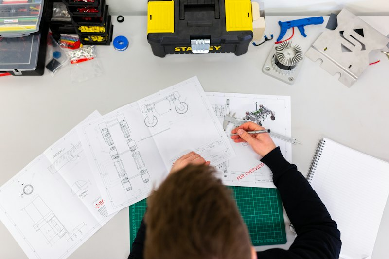

01 / 06
Lean & process redesign
We map how work really flows, remove waste and rework, and redesign processes end to end: on the shop floor and in transactional work such as order-to-cash and procure-to-pay.
- Value-stream mapping and loss trees
- SMED, TPM and OEE programmes
- Transactional lean for shared services
- Standard work and visual management
- cycle time
- -32%Typical: cycle time
- OEE
- +18 ptsTypical: OEE